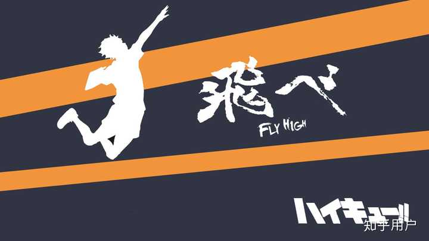

首页
故事介绍
《排球少年！！》为日本漫画家古馆春一以高中排球为主题的漫画，2012年至2020年期间于《周刊少年JUMP》连载。古馆春一出身于岩手县，不过故事背景则设定在宫城县仙台市，因为古馆春一高中毕业后，就读仙台市的仙台设计专门学校，对周遭环境格外了解，古馆出道前就非常想画一部以排球为主的漫画.

《排球少年！！》剧情里提到的排球比赛，如全日本中学校排球选手权大会、全日本排球高等学校选手权大会（春高排球赛）、全国高等学校综合体育大会排球竞技大会（IH预赛）都是实际存在的比赛。虽然某些运动描写上偶有夸大之处，但基本上皆以现实比赛中会使用的战术与技术，故事中的主角们也并非一开始就很强，而是经过一步步训练才逐渐成长，让读者们更能对主角们的遭遇有共感，剧情不时会穿插的排球规则与解说，也让对排球不熟悉的读者便于阅读。